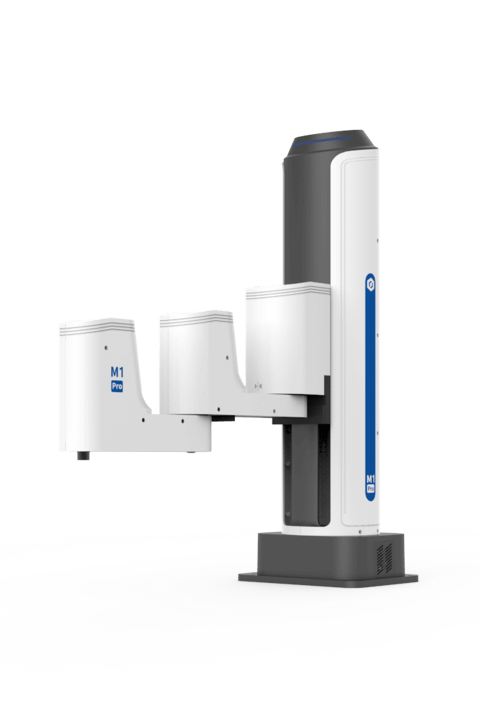
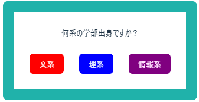
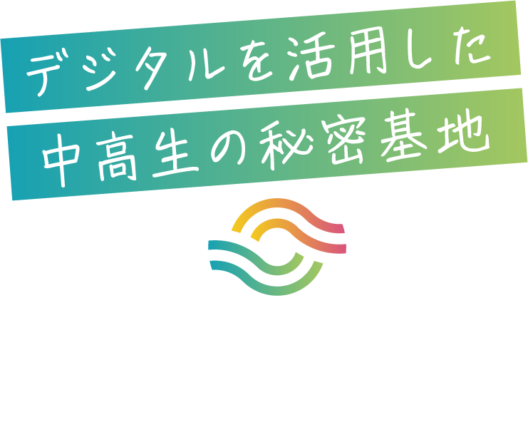

3輪ロボット設計
CAD設計製図の授業でCADを用い設計した3輪ロボットの3Dモデルです。
数字あてゲーム
google colabを使用して数字あてゲームを作成しました。
1から100の間の整数を当ててみてください: 90
もっと小さい数です！
1から100の間の整数を当ててみてください: 83
もっと大きい数です！
1から100の間の整数を当ててみてください: 88
おめでとうございます！正解は88でした。7回で当てました！
理論値です！
colabを開く
基礎研究
くまの形のロボットハンドと、各テーブルに運ぶための台車を設計しました。

詳細
インターンシップ
株式会社ナノコネクトのインターンシップに参加させていただき、リアルタイムアンケートサービスを開発しました。

詳細
インターンシップ（個人）
認定NPO法人CLACKのインターンシップに参加させていただき、施設「よどがわベース」のLPを政策しました。

LPを見る